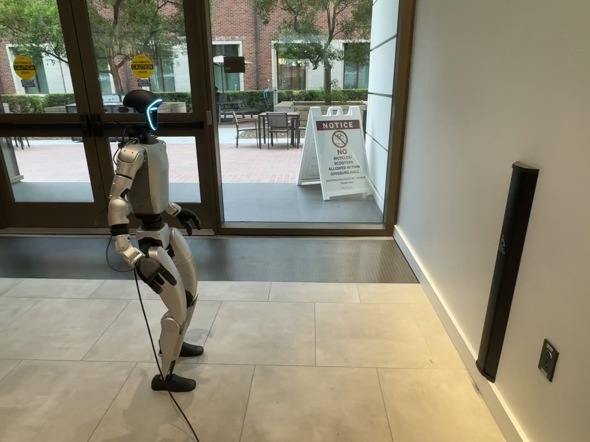

Humanoid Everyday · loco-manip-4__walk_to_gate_button_and_open_gate
Walk to gate button and open gate

Annotation
From the dedicated visual review of this video (humanoid_action_v1). Plain text · JSON
Observed outcome
Outcome
Actuator contact and subsequent opening of both glass door leaves are visible; robot remains beside the wall.
Terminal state
Robot stands beside the wall actuator with its right hand lowered and no longer contacting the control. Both glass door leaves are visibly swung wide open; the robot has not passed through the doorway.
Hand roles
- Right
Active pressing hand. Walks with arm low, then raises and extends it to press and hold the actuator, retracts, briefly re-extends toward it, and finally lowers clear.
- Left
Inactive hand on the far side, low near the torso throughout the actuator interaction; no stabilization, transfer, grasp or actuator contact is observed.
- Coordination
Single-hand manipulation with locomotion to bring the robot within reach; the left hand does not assist.
Robot-side evidence
- Description
The initial PNG shows the illuminated face directed toward image right and the front chest panel on the forward side of the clearly visible near shoulder. This near shoulder/arm is the robot-relative right arm. Continuous tracking through the approach and turn shows this same near arm extending to the actuator; the opposite left hand stays below and behind it near the torso. Later frames show the rear torso hardware toward image left, supporting the forward/backward convention rather than assigning sides by image position.
- Confidence
high
- Uncertainty
None material for anatomical side.
Chronology
- Source frame interval
- 0
- 18
- Action
Initial bent-knee stance facing toward the wall actuator, hands low and empty.
- Confidence
high
- Source frame interval
- 19
- 140
- Action
Walks forward with alternating steps toward the tall black wall actuator, adjusting body heading toward the wall while the arms remain low.
- Confidence
high
- Source frame interval
- 141
- 210
- Action
Stops close to the actuator and settles into a stable bent-knee stance, without hand contact yet.
- Confidence
high
- Source frame interval
- 211
- 253
- Action
Raises and extends the anatomical right arm toward the actuator; fingers remain partly curled. Left hand stays low near the torso.
- Confidence
high
- Source frame interval
- 254
- 318
- Action
Right hand contacts and presses the front of the tall actuator near its accessibility symbol, remaining against it while the body stays planted.
- Confidence
high
- Source frame interval
- 319
- 338
- Action
Retracts the right hand from the actuator by bending the elbow.
- Confidence
high
- Source frame interval
- 339
- 358
- Action
Makes a brief second extension of the right hand toward the actuator; a small visible gap remains in inspected native frames, so a second press is not confirmed. The doors begin opening behind the robot.
- Confidence
high for reach and door movement; uncertain for any second contact
- Source frame interval
- 359
- 380
- Action
Withdraws and lowers the right arm while remaining beside the wall; the two glass door leaves continue to swing open.
- Confidence
high
- Source frame interval
- 381
- 493
- Action
Holds position beside the wall with right hand lowered and clear of the actuator while both door leaves open widely. No walking through the doorway occurs.
- Confidence
high
Differences from the publisher annotation
- Source instruction calls the opening barrier a gate; the visible mechanism is an automatic glass double-door entrance.
Uncertainties
- The brief second forward reach around frames 339-358 approaches the actuator but native frames 346, 350, 352 and 354 show a small gap; a second contact or press is not confirmed.
- Individual finger contact and actuator travel are partly hidden by the hand, although sustained hand-to-actuator contact and subsequent door opening are visible.
Complete review record action_review.json
{
"prompt_protocol": "humanoid_action_v1",
"prompt_provenance": "visually_authored_from_video_and_initial_frame",
"reviewed_contact_sheets": [
"sheet_001.jpg",
"sheet_002.jpg",
"sheet_003.jpg",
"sheet_004.jpg"
],
"inspected_frame_stride": 2,
"inspected_sampled_frame_count": 247,
"initial_scene": "Humanoid stands inside a glass-door entrance, facing toward the tall black accessibility actuator on the adjacent wall. Both hands are empty and low; the glass double doors are closed.",
"observed_sequence": [
{
"source_frame_interval": [
0,
18
],
"action": "Initial bent-knee stance facing toward the wall actuator, hands low and empty.",
"confidence": "high"
},
{
"source_frame_interval": [
19,
140
],
"action": "Walks forward with alternating steps toward the tall black wall actuator, adjusting body heading toward the wall while the arms remain low.",
"confidence": "high"
},
{
"source_frame_interval": [
141,
210
],
"action": "Stops close to the actuator and settles into a stable bent-knee stance, without hand contact yet.",
"confidence": "high"
},
{
"source_frame_interval": [
211,
253
],
"action": "Raises and extends the anatomical right arm toward the actuator; fingers remain partly curled. Left hand stays low near the torso.",
"confidence": "high"
},
{
"source_frame_interval": [
254,
318
],
"action": "Right hand contacts and presses the front of the tall actuator near its accessibility symbol, remaining against it while the body stays planted.",
"confidence": "high"
},
{
"source_frame_interval": [
319,
338
],
"action": "Retracts the right hand from the actuator by bending the elbow.",
"confidence": "high"
},
{
"source_frame_interval": [
339,
358
],
"action": "Makes a brief second extension of the right hand toward the actuator; a small visible gap remains in inspected native frames, so a second press is not confirmed. The doors begin opening behind the robot.",
"confidence": "high for reach and door movement; uncertain for any second contact"
},
{
"source_frame_interval": [
359,
380
],
"action": "Withdraws and lowers the right arm while remaining beside the wall; the two glass door leaves continue to swing open.",
"confidence": "high"
},
{
"source_frame_interval": [
381,
493
],
"action": "Holds position beside the wall with right hand lowered and clear of the actuator while both door leaves open widely. No walking through the doorway occurs.",
"confidence": "high"
}
],
"arm_hand_roles": {
"right": "Active pressing hand. Walks with arm low, then raises and extends it to press and hold the actuator, retracts, briefly re-extends toward it, and finally lowers clear.",
"left": "Inactive hand on the far side, low near the torso throughout the actuator interaction; no stabilization, transfer, grasp or actuator contact is observed.",
"coordination": "Single-hand manipulation with locomotion to bring the robot within reach; the left hand does not assist."
},
"anatomical_side_evidence": {
"description": "The initial PNG shows the illuminated face directed toward image right and the front chest panel on the forward side of the clearly visible near shoulder. This near shoulder/arm is the robot-relative right arm. Continuous tracking through the approach and turn shows this same near arm extending to the actuator; the opposite left hand stays below and behind it near the torso. Later frames show the rear torso hardware toward image left, supporting the forward/backward convention rather than assigning sides by image position.",
"confidence": "high",
"uncertainty": "None material for anatomical side."
},
"object_identity": "Tall wall-mounted black accessibility door actuator, pressed on its front surface near the wheelchair symbol.",
"locomotion": "Forward alternating steps and a small heading adjustment bring the humanoid to the wall actuator; it then remains in place through the manipulation and opening outcome.",
"outcome": "Actuator contact and subsequent opening of both glass door leaves are visible; robot remains beside the wall.",
"uncertainties": [
"The brief second forward reach around frames 339-358 approaches the actuator but native frames 346, 350, 352 and 354 show a small gap; a second contact or press is not confirmed.",
"Individual finger contact and actuator travel are partly hidden by the hand, although sustained hand-to-actuator contact and subsequent door opening are visible."
],
"annotation_discrepancies": [
"Source instruction calls the opening barrier a gate; the visible mechanism is an automatic glass double-door entrance."
],
"evidence_frame_indices": [
0,
44,
138,
230,
256,
300,
332,
346,
350,
352,
354,
380,
420,
493
],
"selected_execution_status": "success",
"initial_png_inspected_at_native_resolution": true,
"inspection_coverage": {
"complete_original_mp4": true,
"sampled_source_frame_range": [
0,
492
],
"last_source_frame_native": 493,
"native_transition_frames": [
44,
138,
230,
256,
300,
332,
346,
350,
352,
354,
380,
420
],
"initial_png": "original/first_frame.png"
},
"terminal_state": "Robot stands beside the wall actuator with its right hand lowered and no longer contacting the control. Both glass door leaves are visibly swung wide open; the robot has not passed through the doorway.",
"video_id": "loco-manip-4",
"dataset": "Humanoid_Everyday",
"dedicated_review_agent": "review_he_loco_manip_4",
"review_source_video": "Humanoid_Everyday/loco-manip-4__walk_to_gate_button_and_open_gate/third_person/original/original.mp4",
"source_frame_count": 494,
"source_fps": 30.0,
"native_detail_frames": [
44,
138,
230,
256,
300,
332,
346,
350,
352,
354,
380,
420,
493
],
"world_model_prompt": "The humanoid robot walks forward to the tall black wall-mounted door actuator, stops within reach, and presses and holds it with its right hand. It pulls the hand back, briefly reaches toward the actuator again, then lowers its right arm and remains beside the wall as the glass double doors swing open. Keep the camera fixed; preserve robot geometry, physically valid joint motion, and normal gripper opening and closing.",
"original_task_instruction": "Walking towards a gate button and pressing it to open the gate, demonstrating navigation to a target and button activation.",
"selected_segment": {
"start_frame": 0,
"end_frame_exclusive": 494,
"reason": "Complete original single-task reference; no cropping or trimming requested."
},
"source_video_sha256": "5286ca1d6cf35ba3c5f9579644c8c11d12119be57f9015d04c9ea1a79b0f4350",
"review_completed_at": "2026-10-13T17:37:27.505354+00:00"
}